本表逐項對照規格書功能需求與目前系統實際畫面，供院方核對第一階段（W52／ICU／OR／ER 四板）之完成度。
每個功能區塊右方為目前實際畫面截圖（點擊可放大）。狀態標示：符合 已符合、部分 部分／待補、待院方 待院方提供資料。
48
已符合項
4
部分／待補項
1
待院方提供
4
白板（W52/ICU/OR/ER）
W52 一般病房 §7.1.2.1
白板基本資訊 ＋ 病室動態 §7.1.2.1(1)(2)
- 符合(1) 站別／護理長／病房主任／電子時鐘／病房跑馬燈
- 符合(2.1) 依單位配置圖顯示病床位置；基本資料（床號／姓名／性別以顏色區分）
- 符合(2.1.1) 點選病床顯示詳細（病歷號／生日／年齡／科別／診斷／主治醫師）
- 符合(2.2) 病人註記 13 項（DNR／高危跌／依賴度／隔離／保密／禁治療／禁食／過敏／RRT／化療／運送／氧氣／洗腎）
- 符合(2.3) 護理站床數統計（總床數／住院／手術／檢查／會診）
- 符合(2.4) RRT 快速反應小組
- 符合(2.5) 床位動態（空床／占床／待轉入／待轉出／待出院）
- 符合(2.6) 各管路使用狀態統計 5 項（人工血管／雙腔靜脈／導尿管／中心靜脈／心導管）
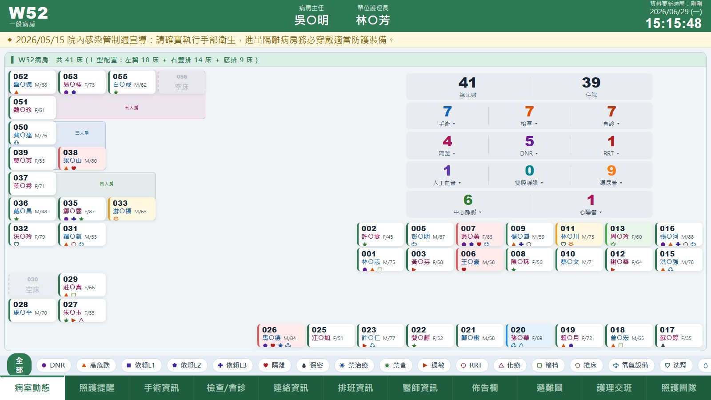
目前實際畫面（點擊放大）照護提醒 §7.1.2.1(3)
- 符合(3) 病人關照提醒（分級與時段）
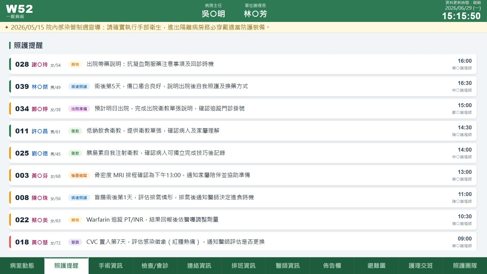
目前實際畫面（點擊放大）手術資訊 §7.1.2.1(4)
- 符合(4) 當日手術：日期／手術間／排程時間／病床號／姓名／年齡／性別／術式／診斷／麻醉方式／主治醫師／手術狀態
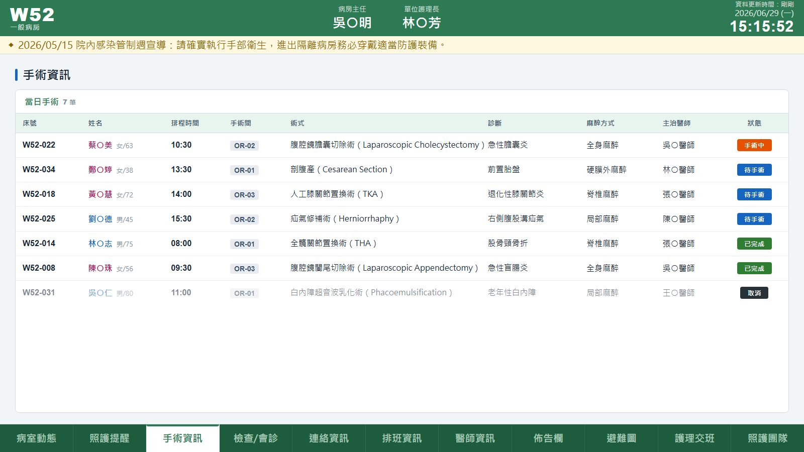
目前實際畫面（點擊放大）檢查／會診 §7.1.2.1(5)
- 符合(5.1)(5.2) 檢查＋會診雙清單（含床號／姓名／項目／時段／醫師／狀態／備註）
- 符合(5.3) 以最新執行時間排序（檢查依檢查時間、會診依會診時間，最新在前）
- 部分(5.4) 完成 24 小時後自動移除
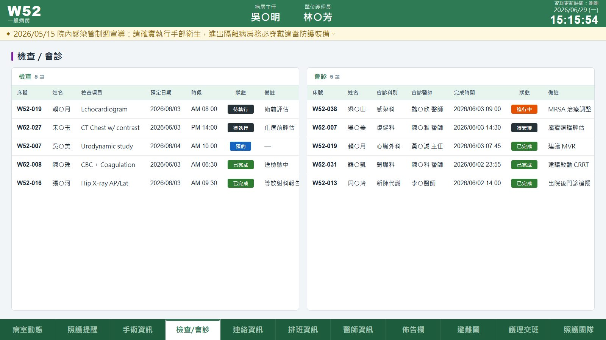
目前實際畫面（點擊放大）連絡資訊 §7.1.2.1(6)
- 符合(6) 當日值班連絡電話＋常用連絡電話（可後台維護）
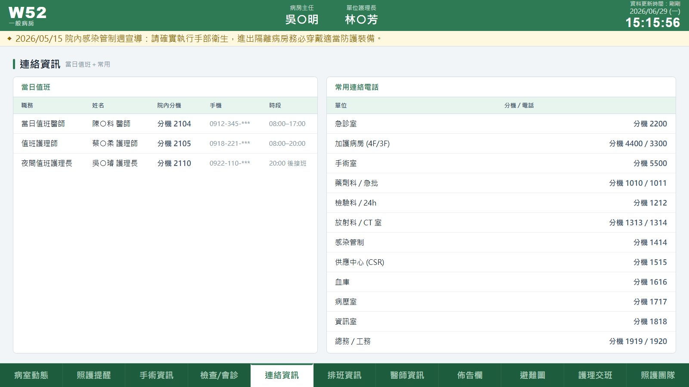
目前實際畫面（點擊放大）排班資訊 §7.1.2.1(7)
- 符合(7.1) 當日護理人員排班（含負責床位／緊急應變編組／點班）
- 符合(7.2) 專科護理師排班
- 符合(7.3) 住院醫師排班
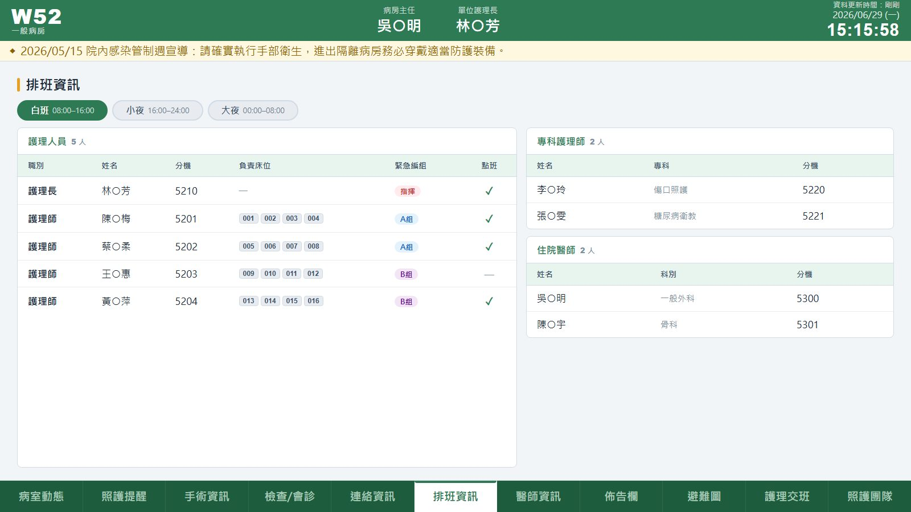
目前實際畫面（點擊放大）醫師資訊 §7.1.2.1(8)
- 符合(8.1) 醫師／專師負責床位
- 符合(8.2) 醫師查房時間表（日期含星期／姓名／查房時段）
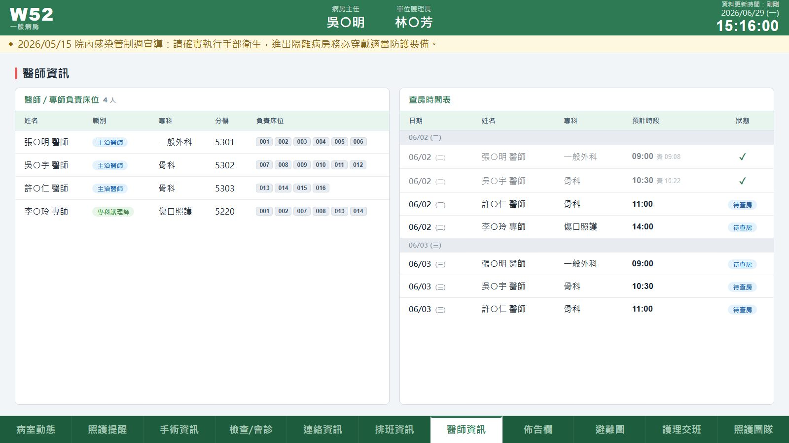
目前實際畫面（點擊放大）佈告欄 §7.1.2.1(9)
- 符合(9) 護理站公告＋院方公告（可後台維護）
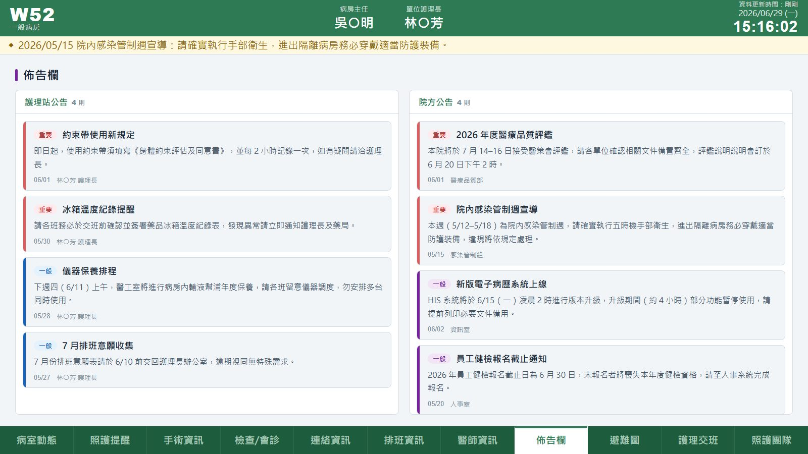
目前實際畫面（點擊放大）避難圖 §7.1.2.1(10)
- 符合(10) 護理站避難圖
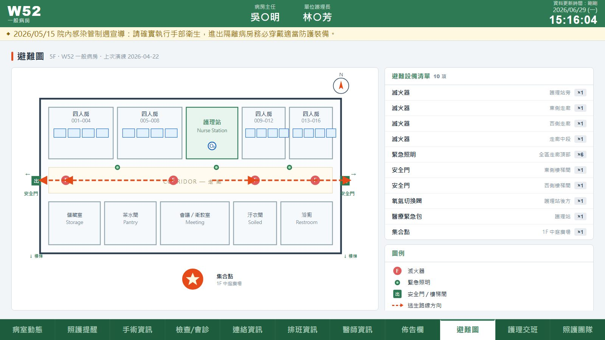
目前實際畫面（點擊放大）護理交班 §7.1.2.1(11)
- 符合(11) 交班日誌摘要（交／接班別、護理師、病人卡與事項）
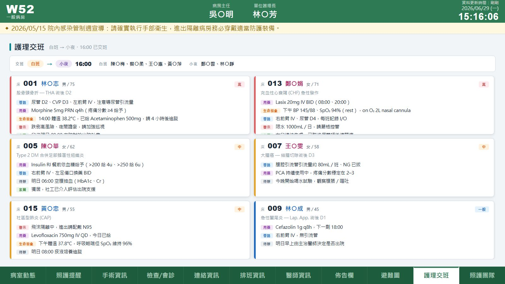
目前實際畫面（點擊放大）照護團隊 §7.1.2.1(12)
- 符合(12) 含科別／職別／姓名／電話分機（依角色分組）
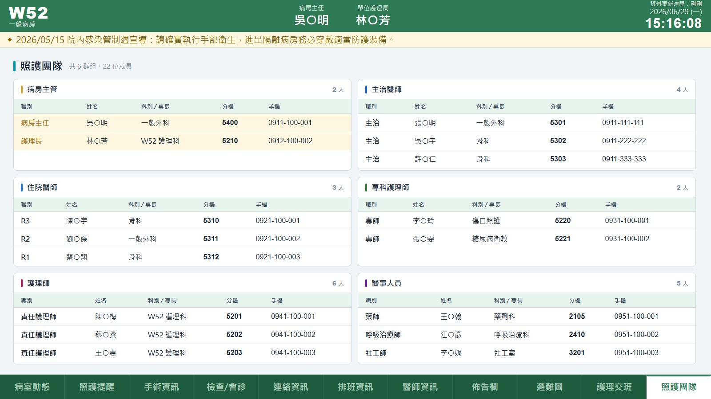
目前實際畫面（點擊放大）ICU 加護病房 §7.1.2.2
病室動態 §7.1.2.2(1)
- 符合(1.1) 基本資料（床號／姓名／性別顏色）＋(1.1.1) 詳細（病歷號／生日／年齡／科別／診斷／主治）
- 符合(1.2) 病患註記（同一般病房 13 項）
- 符合(1.3) 床數統計（總床／住院／手術／檢查／會診）
- 符合(1.4) 疾病嚴重程度 A／B／C（顏色區分）
- 符合(1.5) 管路統計 4 項（氣管內管／鼻胃管／導尿管／中心靜脈）
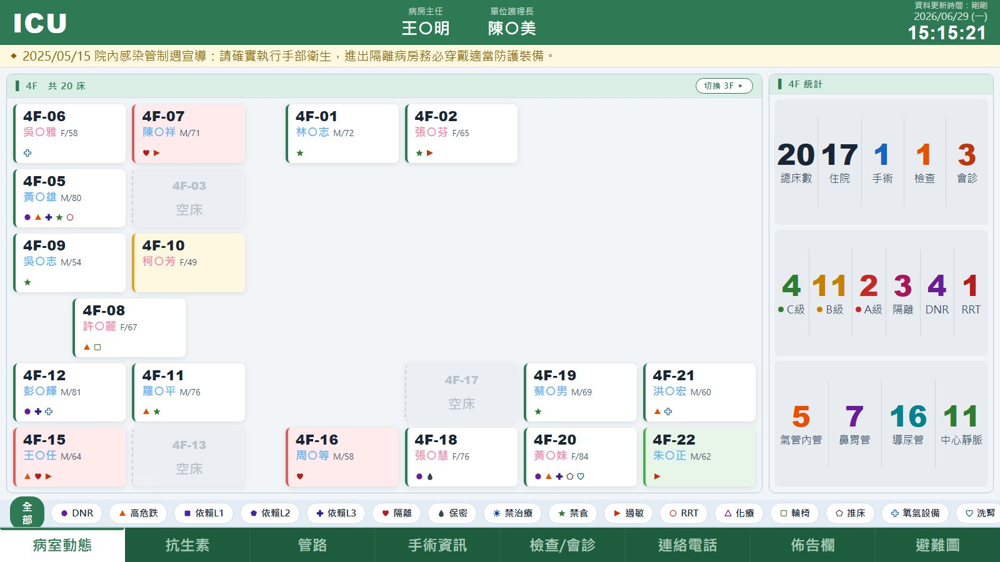
目前實際畫面（點擊放大）抗生素 §7.1.2.2(2)
- 符合(2.1) 不顯示總表，點選平面圖病床後顯示該病人抗生素
- 符合(2.2) 詳細：床號／病歷號／姓名／藥品名稱／開始時間／首次時間／結束時間
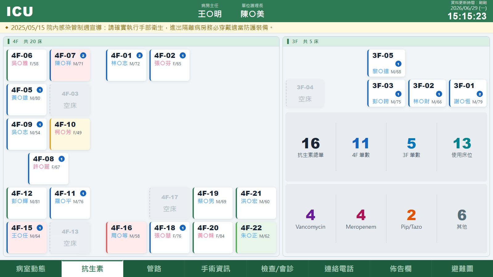
目前實際畫面（點擊放大）管路明細 §7.1.2.2(1.5)
- 符合各床管路狀態總表（氣管內管／鼻胃管／導尿管／中心靜脈／CRRT）
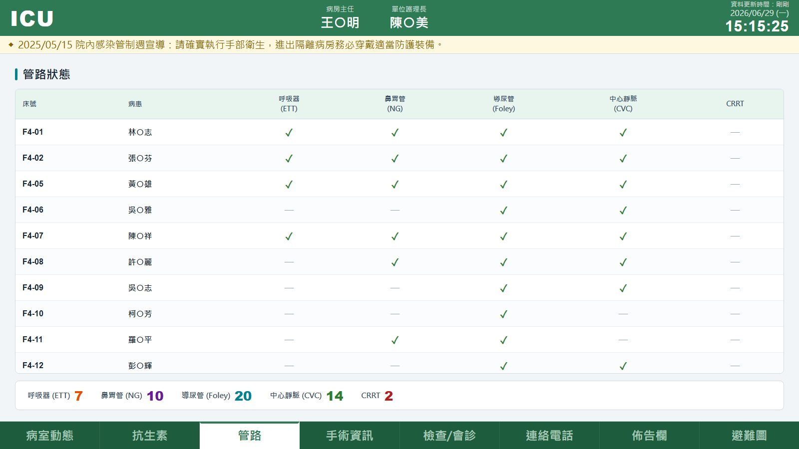
目前實際畫面（點擊放大）手術資訊 §7.1.2.2(3)
- 符合(3.1) 當日手術（日期／刀房／病床／姓名／年齡／性別／術式／診斷／麻醉／主治／狀態）
- 符合(3.2) 病患前後 3 日手術資訊
- 部分(3.1) 刀次欄位
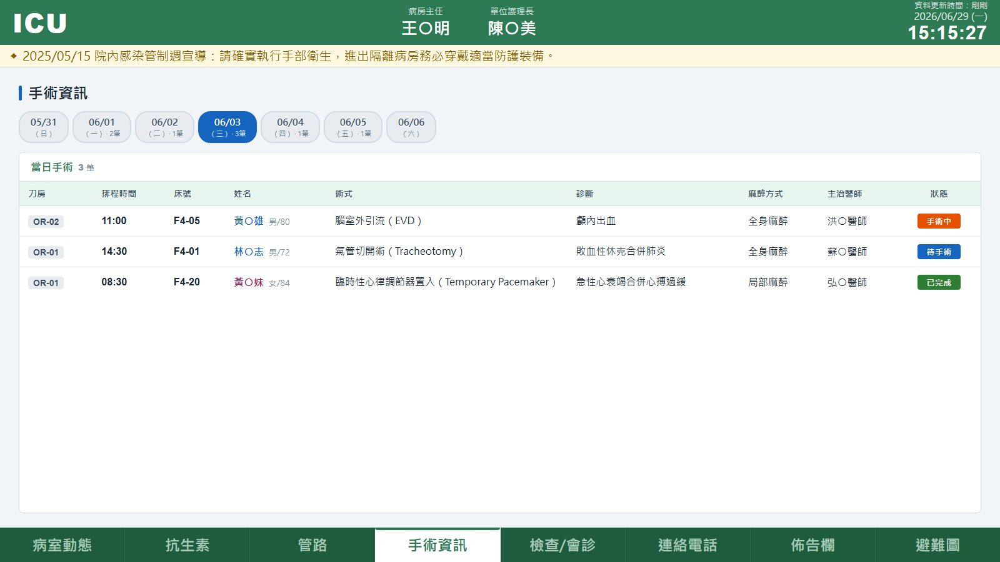
目前實際畫面（點擊放大）檢查／會診 §7.1.2.2(4)
- 符合(4.1)(4.2) 檢查＋會診雙清單
- 符合(4.3) 以最新執行時間排序（最新在前）
- 部分(4.4) 完成 24 小時後自動移除
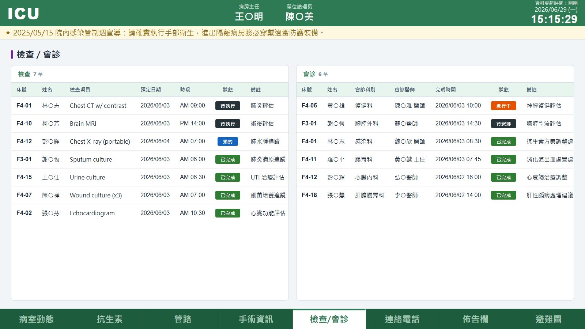
目前實際畫面（點擊放大）手術室 OR §7.1.2.3
手術動態 §7.1.2.3(1)
- 符合依平面位置圖設置開刀房號（OR-01～03、OR-05～08 共 7 間）
- 符合(1.1) 基本資料（床號／姓名／手術醫師／刷手護理師／流動護理師／來源以顏色區分：急診刀／門診刀／住院刀）
- 符合(1.1.1) 詳細（病歷號／性別／年齡／科別／術式／手術醫師／麻醉方式／手術狀態／手術名稱）
- 符合(1.2) 手術統計：總手術／急診刀／門診刀／住院刀
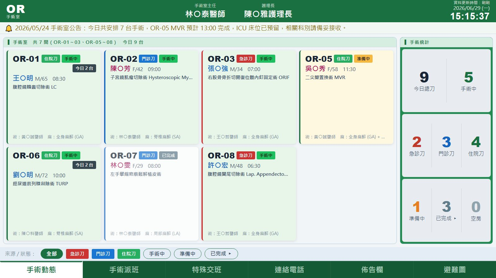
目前實際畫面（點擊放大）手術派班 §7.1.2.3(2)
- 符合(2) 三班各手術室刷手／流動護理師與人員統計
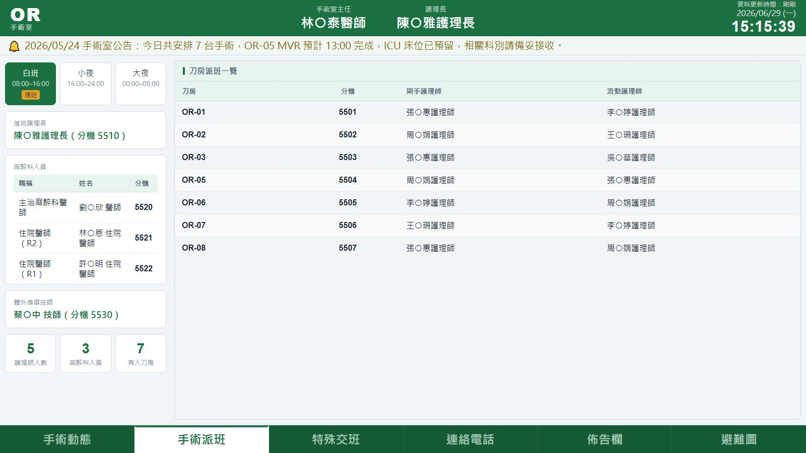
目前實際畫面（點擊放大）特殊交班 §7.1.2.3(3)
- 符合(3) 術後轉病房之特殊交班（轉往／出血／輸血／引流管／注意事項）
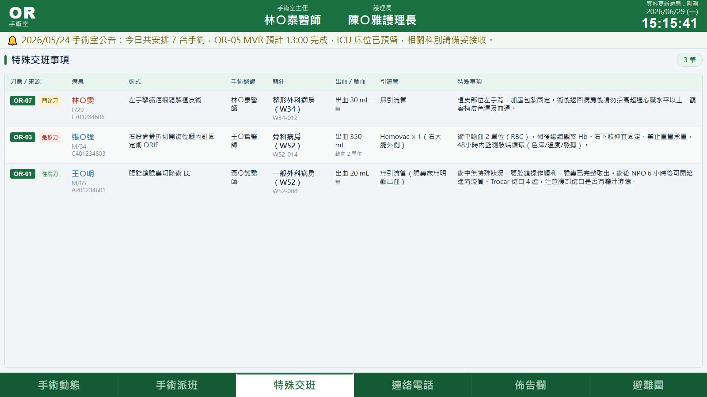
目前實際畫面（點擊放大）急診室 ER §7.1.2.4
病室動態 §7.1.2.4(1)
- 符合依位置圖 7 分區（負壓隔離／急救／第一・二診療區／第一・二留觀／兒科留觀）床位編號
- 符合(1.1) 病人基本資料（含點床詳細）
- 符合(1.2) 統計：總床／看診／留觀／留觀時間／待床（一般／加護／隔離）／重症／輕中症
- 符合(1.3) 病人註記：死亡(N)／MBD／AAD／轉院（轉入＆轉出 含醫院）／DNR／留觀／住院含床號
- 符合(1.2) 待床時間（由院方到院時間推算）
- 待院方(1.2) 待床「加護／隔離」動向代碼（待院方提供）
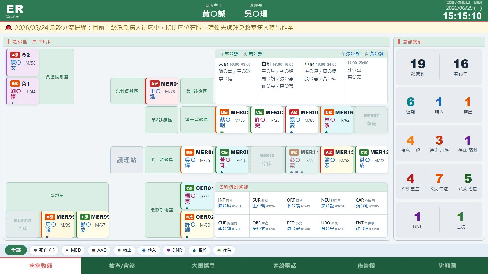
目前實際畫面（點擊放大）檢查／會診 §7.1.2.4(2)
- 符合(2.1)(2.2) 檢查＋會診清單
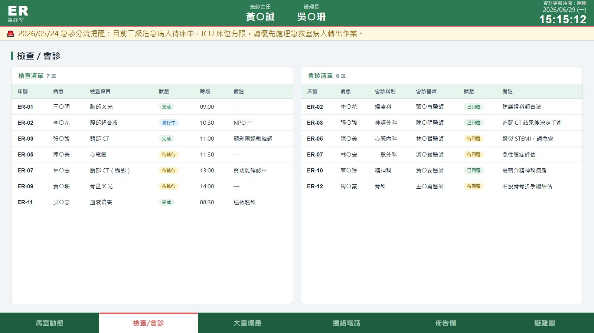
目前實際畫面（點擊放大）大量傷患 §7.1.2.4(3)
- 符合(3.1) 姓名／性別／年齡／病歷號／檢傷分級／科別／診斷
- 符合(3.2) 病人註記（死亡／MBD／AAD／轉院／DNR／留觀／住院含床號）
- 部分(3.2) 轉院顯示醫院名稱
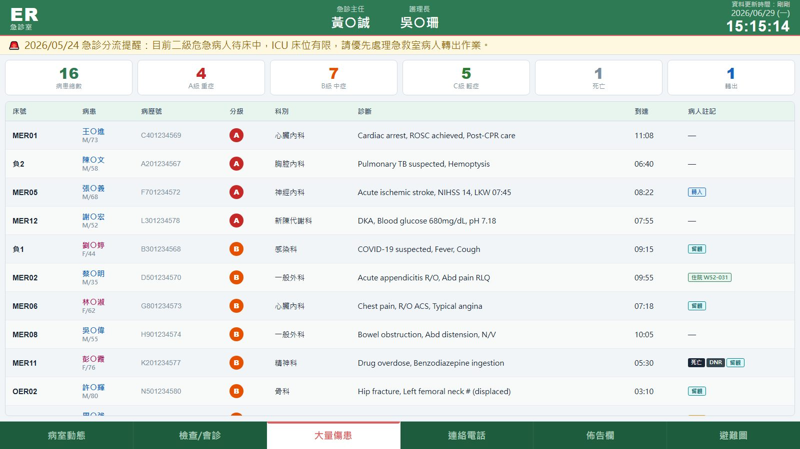
目前實際畫面（點擊放大）
共通與階段說明：
· 開發架構（§7.1.1）已符合：Windows Server 2022／IIS／.NET 8／SQL Server／React（Web-based，支援 Chrome／Edge／Safari）。
· 檢查／會診「依時間排序」與「完成 24 小時自動移除」（§7.1.2.1(5.3)(5.4)、§7.1.2.2(4.3)(4.4)）為可立即補強之程式項。
· ER 待床時間、待床「加護／隔離」代碼需院方提供對應動向代碼／時間欄位後補齊。
· 帳號 AD 整合／真帳密驗證屬與院方資訊室之整合項，另行排程。
· 洗腎室（§7.1.2.5）規格列為第二階段，本階段不含；硬體（§7.1.3：55吋觸控顯示器×4、播放電腦×4、BSMI）屬採購／建置項目。
· 開發架構（§7.1.1）已符合：Windows Server 2022／IIS／.NET 8／SQL Server／React（Web-based，支援 Chrome／Edge／Safari）。
· 檢查／會診「依時間排序」與「完成 24 小時自動移除」（§7.1.2.1(5.3)(5.4)、§7.1.2.2(4.3)(4.4)）為可立即補強之程式項。
· ER 待床時間、待床「加護／隔離」代碼需院方提供對應動向代碼／時間欄位後補齊。
· 帳號 AD 整合／真帳密驗證屬與院方資訊室之整合項，另行排程。
· 洗腎室（§7.1.2.5）規格列為第二階段，本階段不含；硬體（§7.1.3：55吋觸控顯示器×4、播放電腦×4、BSMI）屬採購／建置項目。